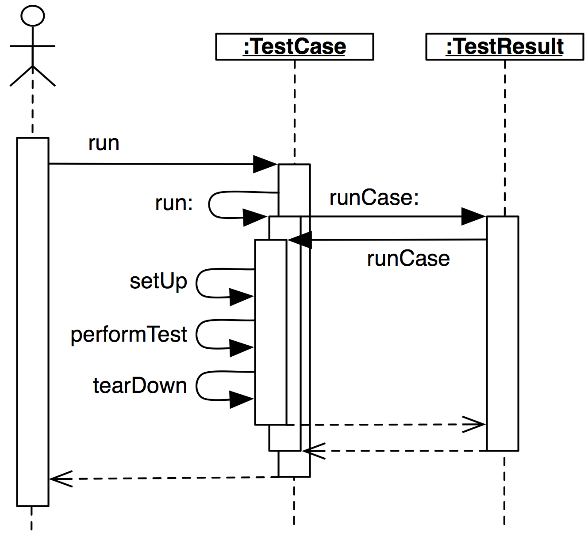
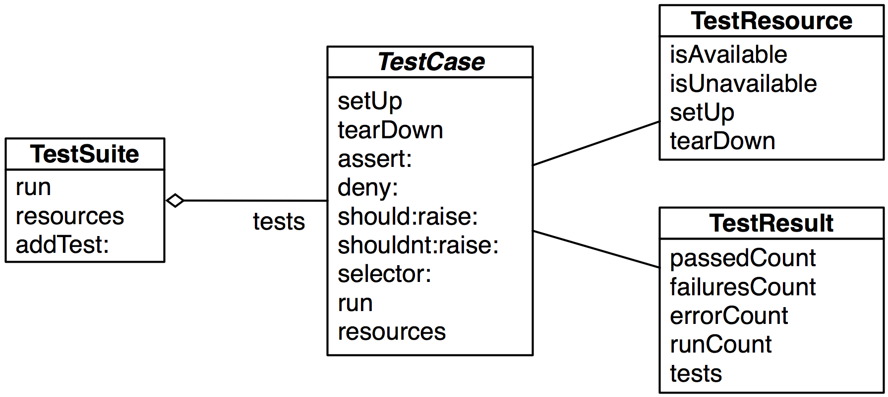

5 SUnit: The framework
Now that you see that writing a test is easy, we will take the time to put into perspective the different aspects of SUnit. SUnit is a framework in the sense that it proposes an architecture that can be adapted. We will not cover the techniques to extend the framework but we will present the key classes and discuss some important points.
5.1 Understanding the framework
What we saw in the previous chapter is that a test method defines a test. Now there is a catch:
- A method (called a test method) of a subclass of the class
TestCaserepresents a test. - A
TestCasesubclass groups together all the tests sharing a similar context, called a fixture. - A
setUpmethod is run systematically before a test method is run and atearDownafter. - The framework builds a
TestSuite(a composite of tests) to execute the tests.
5.2 During test execution
Figure 5.1 shows the steps during the execution run of a test:
- An instance of
TestCaseis created. - It creates an instance of
TestResult. - This instance calls back the
TestCaseinstance which executes- the test
setUp - the test method
- and finally the test
tearDownmethod.
- the test
run execution.
In fact, the framework ensures that any test method is always surrounded by the execution of the setUp and tearDown methods.
Figure 5.2 illustrates this point.
It ensures that the fixture is always in a correct state and avoids dependencies between test execution.
5.3 The framework in a nutshell
SUnit consists of four main classes: TestCase, TestSuite,
TestResult, and TestResource, as shown in Figure 5.3.

TestCase
TestCase is an abstract class that is designed to be subclassed. Each of its
subclasses represents a group of tests that share a common context: such a group is called a test suite.
Each test is run by creating a new instance of a subclass of TestCase, running setUp to initialize the test fixture, running the test method itself, and then sending the tearDown to clean up the test fixture.
The fixture is specified by instance variables of the subclass and by the specialization of the method setUp, which initializes those instance
variables. Subclasses of TestCase can also override method tearDown,
which is invoked after the execution of each test, and can be used to release
any objects allocated during setUp.
TestSuite
Instances of the class TestSuite contain a collection of test cases. An
instance of TestSuite contains tests and other test suites. That is, a test
suite contains sub-instances of TestCase and TestSuite.
Both individual test cases and test suites understand the same protocol, so
they can be treated in the same way (for example, both can be run). This is
in fact an application of the Composite pattern in which TestSuite is the
composite and the test cases are the leaves.
TestResult
The class TestResult represents the results of a TestSuite execution.
It records the number of tests passed, the number of tests failed, and the
number of errors signaled.
TestResources
The notion of a test resource represents a resource that is expensive to
set-up but which can be used by a whole series of tests.
A TestResource specifies a setUp method that is executed just once before a full suite of tests;
this is in distinction to the TestCase >> setUp method, which is executed before each test.
The class TestResource represents resources that can be shared among a test suite:
Subclasses of TestResource are associated with test case classes and this means that all the suite of tests
represented by the test case class (See Chapter 6).
5.4 Test states
As we mentioned earlier, the result of a test execution is mainly: passed (meaning that it succeeded), fails (that an assertion is not valid) or error (that an unexpected problem occurred).
Failures vs. Error
In fact, this is really important to understand the difference between a failure and an error. A failure is something that you plan and you check whether is happened or not. When it happens your tests pass, or else it fails.
Removing an element that is not in a set from that set raises an error. If we write the following test, the test will fail.
MyExampleSetTest >> testRemoveNonexistentElement
empty remove: 5.Now using the message should:raise: we make sure that we check that the expression effectively raises an error.
It means that our test can either pass (i.e., it means that the test fulfills our requirement here that it should raise an error when removing an unknown element) or fail. We planned such behavior. It can fail or pass.
MyExampleSetTest >> testRemoveNonexistentElement
self should: [ empty remove: 5 ] raise: NotFoundFor an error this is different, an error occurs in an unplanned manner.
The execution of the first version of testRemoveNonexistentElement would lead to an error.
Expected Failures and Skip
In addition, a test can be in two other states: skipped and expected failures. Such states are handy during development.
The idea is that if you write a complex test and suddenly you realize that you will have more work than expected to make your test pass, you can mark it as skipped.
MyExampleSetTest >> testToBeRevisitedLater
self skip.
...In fact, it is much better to use the message skip than to use a guard.
Why because the framework can report clearly that your test is skipped.
Using a guard as below is the best way to confuse yourself because the framework
will return that the test passes while it does NOT.
MyExampleSetTest >> testToBeRevisitedLater
true ifTrue: [^ self ].
...You can also tag your test with the <expectedFailure> pragma to indicate to the framework that you expect
your test to fail. This is to be taken into account by the framework when running and reporting all your tests. Hence you will be
aware that some of your tests did not run correctly.
Here is an example from Pharo.
testFromClassWhichTraitIsExtendedButNotItself
"I'm tagging this expected failure because I'm not sure now if it is appropriate to keep
or not with the removal of the 'traits-as-multiple-inheritance' stuff."
<expectedFailure>
self queryFromScope: ClyClassScope of: ClyClassWithTraits.
self assert: resultItems size equals: 05.5 Glossary
- Test case. A test case is a single test. It defines a context, a stimulus, and at the minimum one assertion. It is described as a method of a TestCase subclass starting with test.
- Test suite. A test suite (Composite design pattern) is a group of tests. The tests belonging to a test suite do not have to be from the same class. In practice, the test runner builds a test suite for all the test cases defined in a class and executes them one by one. Instances of the class
TestSuitecontain a collection of test cases. An instance ofTestSuitecontains tests and other test suites. That is, a test suite contains sub-instances ofTestCaseandTestSuite. - Fixture. A fixture is a context in which a stimulus will be executed and assertions verified. To share a fixture amongst multiple tests you can define the
setUpmethod. It is automatically invoked before any test method execution. - Failure. A failure is the situation where you planned something and checked it and it is not correct.
- Error. An error is the situation where your test is not working but it is not covered by an assertion. For example, a message not understood is sent and it was unexpected.
5.6 Chapter summary
In this chapter we gave an overview of the core of the SUnit framework
by presenting the classes TestCase, TestResult, TestSuite and
TestResources. We described the setUp/tearDown logic and the different states a test can be in.